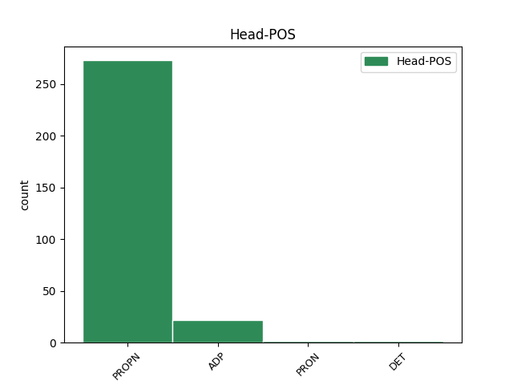

Distribution of features within this leaf

Agreement Rules sorted by frequency.
- When the dependent token is the compound(compound) of the head token, and the head token is PROPN and the dependent token is PROPN.
1 Osigurajte _ _ _ _ 0 _ _ _
2 na _ _ _ _ 0 _ _ _
3 vrijeme _ _ _ _ 0 _ _ _
4 svoje _ _ _ _ 0 _ _ _
5 mjesto _ _ _ _ 0 _ _ _
6 putem _ _ _ _ 0 _ _ _
7 weba _ _ _ _ 0 _ _ _
8 Green Green PROPN Npmsn Case=Nom|Gender=Masc|Number=Sing 0 _ _ _
9 Gold Gold PROPN Npmsn Case=Nom|Gender=Masc|Number=Sing 8 compound _ _
10 Cluba _ _ _ _ 0 _ _ _
11 . _ _ _ _ 0 _ _ _
1 Sportaši _ _ _ _ 0 _ _ _
2 bi _ _ _ _ 0 _ _ _
3 trebali _ _ _ _ 0 _ _ _
4 razmisliti _ _ _ _ 0 _ _ _
5 o _ _ _ _ 0 _ _ _
6 tome _ _ _ _ 0 _ _ _
7 trebaju _ _ _ _ 0 _ _ _
8 li _ _ _ _ 0 _ _ _
9 im _ _ _ _ 0 _ _ _
10 ugljikohidrati _ _ _ _ 0 _ _ _
11 za za ADP Sa Case=Acc 0 _ _ _
12 vrijeme vrijeme NOUN Ncnsa Case=Acc|Gender=Neut|Number=Sing 11 compound _ _
13 ili _ _ _ _ 0 _ _ _
14 prije _ _ _ _ 0 _ _ _
15 treninga _ _ _ _ 0 _ _ _
16 , _ _ _ _ 0 _ _ _
17 i _ _ _ _ 0 _ _ _
18 to _ _ _ _ 0 _ _ _
19 na _ _ _ _ 0 _ _ _
20 temelju _ _ _ _ 0 _ _ _
21 ciljeva _ _ _ _ 0 _ _ _
22 samog _ _ _ _ 0 _ _ _
23 treninga _ _ _ _ 0 _ _ _
24 te _ _ _ _ 0 _ _ _
25 relativnog _ _ _ _ 0 _ _ _
26 značaja _ _ _ _ 0 _ _ _
27 održavanja _ _ _ _ 0 _ _ _
28 intenzivnog _ _ _ _ 0 _ _ _
29 vježbanja _ _ _ _ 0 _ _ _
30 tijekom _ _ _ _ 0 _ _ _
31 cijelog _ _ _ _ 0 _ _ _
32 treninga _ _ _ _ 0 _ _ _
33 kako _ _ _ _ 0 _ _ _
34 bi _ _ _ _ 0 _ _ _
35 se _ _ _ _ 0 _ _ _
36 potpomogla _ _ _ _ 0 _ _ _
37 metabolička _ _ _ _ 0 _ _ _
38 i _ _ _ _ 0 _ _ _
39 fiziološka _ _ _ _ 0 _ _ _
40 adaptacija _ _ _ _ 0 _ _ _
41 na _ _ _ _ 0 _ _ _
42 trening _ _ _ _ 0 _ _ _
43 . _ _ _ _ 0 _ _ _
1 S _ _ _ _ 0 _ _ _
2 druge _ _ _ _ 0 _ _ _
3 strane _ _ _ _ 0 _ _ _
4 , _ _ _ _ 0 _ _ _
5 ono _ _ _ _ 0 _ _ _
6 što _ _ _ _ 0 _ _ _
7 je _ _ _ _ 0 _ _ _
8 Nova _ _ _ _ 0 _ _ _
9 TV _ _ _ _ 0 _ _ _
10 napravila _ _ _ _ 0 _ _ _
11 Kukuriku Kukuriku PROPN Npmsan Animacy=Inan|Case=Acc|Gender=Masc|Number=Sing 0 _ _ _
12 koaliciji koalicija NOUN Ncfsa Case=Acc|Gender=Fem|Number=Sing 11 compound _ _
13 u _ _ _ _ 0 _ _ _
14 toj _ _ _ _ 0 _ _ _
15 istoj _ _ _ _ 0 _ _ _
16 izbornoj _ _ _ _ 0 _ _ _
17 jedinici _ _ _ _ 0 _ _ _
18 je _ _ _ _ 0 _ _ _
19 neviđena _ _ _ _ 0 _ _ _
20 i _ _ _ _ 0 _ _ _
21 sramotna _ _ _ _ 0 _ _ _
22 podvala _ _ _ _ 0 _ _ _
23 . _ _ _ _ 0 _ _ _
1 Životopis _ _ _ _ 0 _ _ _
2 mu _ _ _ _ 0 _ _ _
3 je _ _ _ _ 0 _ _ _
4 objavljen _ _ _ _ 0 _ _ _
5 u _ _ _ _ 0 _ _ _
6 Tko _ _ _ _ 0 _ _ _
7 je _ _ _ _ 0 _ _ _
8 tko _ _ _ _ 0 _ _ _
9 u u ADP Sl Case=Loc 10 compound _ _
10 NDH Ndh PROPN Npmsl Case=Loc|Gender=Masc|Number=Sing 0 _ _ _
11 , _ _ _ _ 0 _ _ _
12 str. _ _ _ _ 0 _ _ _
13 . _ _ _ _ 0 _ _ _
14 314. _ _ _ _ 0 _ _ _
1 Njemački _ _ _ _ 0 _ _ _
2 savezni _ _ _ _ 0 _ _ _
3 tužitelji _ _ _ _ 0 _ _ _
4 Dietrich _ _ _ _ 0 _ _ _
5 i _ _ _ _ 0 _ _ _
6 Weiss _ _ _ _ 0 _ _ _
7 , _ _ _ _ 0 _ _ _
8 koji _ _ _ _ 0 _ _ _
9 stoje _ _ _ _ 0 _ _ _
10 iza _ _ _ _ 0 _ _ _
11 slučaja _ _ _ _ 0 _ _ _
12 Đureković _ _ _ _ 0 _ _ _
13 , _ _ _ _ 0 _ _ _
14 ponudili _ _ _ _ 0 _ _ _
15 su _ _ _ _ 0 _ _ _
16 Josipu _ _ _ _ 0 _ _ _
17 Perkoviću _ _ _ _ 0 _ _ _
18 da _ _ _ _ 0 _ _ _
19 prizna _ _ _ _ 0 _ _ _
20 krivnju _ _ _ _ 0 _ _ _
21 , _ _ _ _ 0 _ _ _
22 da _ _ _ _ 0 _ _ _
23 se _ _ _ _ 0 _ _ _
24 nagodi _ _ _ _ 0 _ _ _
25 s _ _ _ _ 0 _ _ _
26 državnim _ _ _ _ 0 _ _ _
27 odvjetništvom _ _ _ _ 0 _ _ _
28 Njemačke _ _ _ _ 0 _ _ _
29 , _ _ _ _ 0 _ _ _
30 pa _ _ _ _ 0 _ _ _
31 ako _ _ _ _ 0 _ _ _
32 ta _ _ _ _ 0 _ _ _
33 nagodba _ _ _ _ 0 _ _ _
34 bude _ _ _ _ 0 _ _ _
35 obuhvaćala _ _ _ _ 0 _ _ _
36 priznanje _ _ _ _ 0 _ _ _
37 pomaganja _ _ _ _ 0 _ _ _
38 u _ _ _ _ 0 _ _ _
39 ubojstvu _ _ _ _ 0 _ _ _
40 da _ _ _ _ 0 _ _ _
41 mu _ _ _ _ 0 _ _ _
42 nude _ _ _ _ 0 _ _ _
43 tri _ _ _ _ 0 _ _ _
44 godine _ _ _ _ 0 _ _ _
45 zatvora _ _ _ _ 0 _ _ _
46 , _ _ _ _ 0 _ _ _
47 s sa ADP Si Case=Ins 0 _ _ _
48 tim taj DET Pd-nsi Case=Ins|Gender=Neut|Number=Sing|PronType=Dem 47 compound _ _
49 da _ _ _ _ 0 _ _ _
50 bi _ _ _ _ 0 _ _ _
51 izvršenje _ _ _ _ 0 _ _ _
52 kazne _ _ _ _ 0 _ _ _
53 bilo _ _ _ _ 0 _ _ _
54 u _ _ _ _ 0 _ _ _
55 Hrvatskoj _ _ _ _ 0 _ _ _
56 , _ _ _ _ 0 _ _ _
57 kaže _ _ _ _ 0 _ _ _
58 Perkovićev _ _ _ _ 0 _ _ _
59 odvjetnik _ _ _ _ 0 _ _ _
60 Anto _ _ _ _ 0 _ _ _
61 Nobilo _ _ _ _ 0 _ _ _
62 . _ _ _ _ 0 _ _ _
1 U _ _ _ _ 0 _ _ _
2 tebi _ _ _ _ 0 _ _ _
3 se _ _ _ _ 0 _ _ _
4 budi _ _ _ _ 0 _ _ _
5 lagana _ _ _ _ 0 _ _ _
6 zavist _ _ _ _ 0 _ _ _
7 , _ _ _ _ 0 _ _ _
8 ali _ _ _ _ 0 _ _ _
9 ne _ _ _ _ 0 _ _ _
10 zbog zbog ADP Sg Case=Gen 11 compound _ _
11 toga taj DET Pd-msg Case=Gen|Gender=Masc|Number=Sing|PronType=Dem 0 _ _ _
12 što _ _ _ _ 0 _ _ _
13 on _ _ _ _ 0 _ _ _
14 ima _ _ _ _ 0 _ _ _
15 , _ _ _ _ 0 _ _ _
16 nego _ _ _ _ 0 _ _ _
17 jer _ _ _ _ 0 _ _ _
18 bi _ _ _ _ 0 _ _ _
19 i _ _ _ _ 0 _ _ _
20 ti _ _ _ _ 0 _ _ _
21 želio _ _ _ _ 0 _ _ _
22 . _ _ _ _ 0 _ _ _
1 Životopis _ _ _ _ 0 _ _ _
2 mu _ _ _ _ 0 _ _ _
3 je _ _ _ _ 0 _ _ _
4 objavljen _ _ _ _ 0 _ _ _
5 u _ _ _ _ 0 _ _ _
6 Tko tko PRON Pq3m-n Case=Nom|Gender=Masc|PronType=Int,Rel 8 compound _ _
7 je _ _ _ _ 0 _ _ _
8 tko tko PRON Pq3m-n Case=Nom|Gender=Masc|PronType=Int,Rel 0 _ _ _
9 u _ _ _ _ 0 _ _ _
10 NDH _ _ _ _ 0 _ _ _
11 , _ _ _ _ 0 _ _ _
12 str. _ _ _ _ 0 _ _ _
13 . _ _ _ _ 0 _ _ _
14 314. _ _ _ _ 0 _ _ _
Disagree Examples:
1 Također _ _ _ _ 0 _ _ _
2 će _ _ _ _ 0 _ _ _
3 biti _ _ _ _ 0 _ _ _
4 iznesena _ _ _ _ 0 _ _ _
5 preporuka _ _ _ _ 0 _ _ _
6 treba _ _ _ _ 0 _ _ _
7 li _ _ _ _ 0 _ _ _
8 Bugarska _ _ _ _ 0 _ _ _
9 ući _ _ _ _ 0 _ _ _
10 u _ _ _ _ 0 _ _ _
11 EU _ _ _ _ 0 _ _ _
12 1. _ _ _ _ 0 _ _ _
13 siječnja _ _ _ _ 0 _ _ _
14 2007. _ _ _ _ 0 _ _ _
15 godine _ _ _ _ 0 _ _ _
16 , _ _ _ _ 0 _ _ _
17 ili _ _ _ _ 0 _ _ _
18 treba _ _ _ _ 0 _ _ _
19 odgoditi _ _ _ _ 0 _ _ _
20 njezin _ _ _ _ 0 _ _ _
21 prijam _ _ _ _ 0 _ _ _
22 na _ _ _ _ 0 _ _ _
23 godinu _ _ _ _ 0 _ _ _
24 dana _ _ _ _ 0 _ _ _
25 u u ADP Sl Case=Loc 0 _ _ _
26 skladu _ _ _ _ 0 _ _ _
27 sa sa ADP Si Case=Ins 25 compound _ _
28 zaštitnom _ _ _ _ 0 _ _ _
29 klauzulom _ _ _ _ 0 _ _ _
30 . _ _ _ _ 0 _ _ _
1 Sporazum _ _ _ _ 0 _ _ _
2 , _ _ _ _ 0 _ _ _
3 pohvaljen _ _ _ _ 0 _ _ _
4 od _ _ _ _ 0 _ _ _
5 strane _ _ _ _ 0 _ _ _
6 ekonomista _ _ _ _ 0 _ _ _
7 i _ _ _ _ 0 _ _ _
8 vlade _ _ _ _ 0 _ _ _
9 , _ _ _ _ 0 _ _ _
10 izazvao _ _ _ _ 0 _ _ _
11 je _ _ _ _ 0 _ _ _
12 prosvjede _ _ _ _ 0 _ _ _
13 zaposlenih _ _ _ _ 0 _ _ _
14 , _ _ _ _ 0 _ _ _
15 koji _ _ _ _ 0 _ _ _
16 strahuju _ _ _ _ 0 _ _ _
17 da _ _ _ _ 0 _ _ _
18 bi _ _ _ _ 0 _ _ _
19 novi _ _ _ _ 0 _ _ _
20 vlasnik _ _ _ _ 0 _ _ _
21 mogao _ _ _ _ 0 _ _ _
22 krenuti _ _ _ _ 0 _ _ _
23 sa _ _ _ _ 0 _ _ _
24 smanjenjem _ _ _ _ 0 _ _ _
25 broja _ _ _ _ 0 _ _ _
26 radnih _ _ _ _ 0 _ _ _
27 mjesta _ _ _ _ 0 _ _ _
28 , _ _ _ _ 0 _ _ _
29 unatoč _ _ _ _ 0 _ _ _
30 tome taj DET Pd-nsd Case=Dat|Gender=Neut|Number=Sing|PronType=Dem 0 _ _ _
31 što što PRON Pi3n-n Case=Nom|Gender=Neut|PronType=Int,Rel 30 compound _ _
32 su _ _ _ _ 0 _ _ _
33 dobili _ _ _ _ 0 _ _ _
34 uvjeravanja _ _ _ _ 0 _ _ _
35 da _ _ _ _ 0 _ _ _
36 se _ _ _ _ 0 _ _ _
37 to _ _ _ _ 0 _ _ _
38 neće _ _ _ _ 0 _ _ _
39 dogoditi _ _ _ _ 0 _ _ _
40 . _ _ _ _ 0 _ _ _
1 Prema _ _ _ _ 0 _ _ _
2 ugovoru _ _ _ _ 0 _ _ _
3 vrijednom _ _ _ _ 0 _ _ _
4 100 _ _ _ _ 0 _ _ _
5 milijuna _ _ _ _ 0 _ _ _
6 eura _ _ _ _ 0 _ _ _
7 , _ _ _ _ 0 _ _ _
8 koji _ _ _ _ 0 _ _ _
9 je _ _ _ _ 0 _ _ _
10 potpisan _ _ _ _ 0 _ _ _
11 13. _ _ _ _ 0 _ _ _
12 rujna _ _ _ _ 0 _ _ _
13 između _ _ _ _ 0 _ _ _
14 Agencije _ _ _ _ 0 _ _ _
15 za _ _ _ _ 0 _ _ _
16 nadzor _ _ _ _ 0 _ _ _
17 privatizacije _ _ _ _ 0 _ _ _
18 i _ _ _ _ 0 _ _ _
19 post-privatizacije _ _ _ _ 0 _ _ _
20 te _ _ _ _ 0 _ _ _
21 predstavnika _ _ _ _ 0 _ _ _
22 austrijske _ _ _ _ 0 _ _ _
23 tvrtke _ _ _ _ 0 _ _ _
24 BT _ _ _ _ 0 _ _ _
25 Invest _ _ _ _ 0 _ _ _
26 , _ _ _ _ 0 _ _ _
27 80 _ _ _ _ 0 _ _ _
28 posto _ _ _ _ 0 _ _ _
29 dionica _ _ _ _ 0 _ _ _
30 Bulgartabaca _ _ _ _ 0 _ _ _
31 odlaze _ _ _ _ 0 _ _ _
32 toj _ _ _ _ 0 _ _ _
33 tvrtki _ _ _ _ 0 _ _ _
34 , _ _ _ _ 0 _ _ _
35 koja _ _ _ _ 0 _ _ _
36 je _ _ _ _ 0 _ _ _
37 u _ _ _ _ 0 _ _ _
38 vlasništvu _ _ _ _ 0 _ _ _
39 VTB VTB PROPN Npmsn Case=Nom|Gender=Masc|Number=Sing 40 compound _ _
40 Capitala Capital PROPN Npmsg Case=Gen|Gender=Masc|Number=Sing 0 _ _ _
41 , _ _ _ _ 0 _ _ _
42 investicijskog _ _ _ _ 0 _ _ _
43 ogranka _ _ _ _ 0 _ _ _
44 ruske _ _ _ _ 0 _ _ _
45 državne _ _ _ _ 0 _ _ _
46 VTB _ _ _ _ 0 _ _ _
47 Banke _ _ _ _ 0 _ _ _
48 . _ _ _ _ 0 _ _ _
1 U _ _ _ _ 0 _ _ _
2 službenoj _ _ _ _ 0 _ _ _
3 izjavi _ _ _ _ 0 _ _ _
4 , _ _ _ _ 0 _ _ _
5 glavni _ _ _ _ 0 _ _ _
6 direktor _ _ _ _ 0 _ _ _
7 VTB VTB PROPN Npmsn Case=Nom|Gender=Masc|Number=Sing 8 compound _ _
8 Capitala Capital PROPN Npmsg Case=Gen|Gender=Masc|Number=Sing 0 _ _ _
9 Atanas _ _ _ _ 0 _ _ _
10 Bostandžiev _ _ _ _ 0 _ _ _
11 rekao _ _ _ _ 0 _ _ _
12 je _ _ _ _ 0 _ _ _
13 kako _ _ _ _ 0 _ _ _
14 kupac _ _ _ _ 0 _ _ _
15 planira _ _ _ _ 0 _ _ _
16 uložiti _ _ _ _ 0 _ _ _
17 oko _ _ _ _ 0 _ _ _
18 milijun _ _ _ _ 0 _ _ _
19 eura _ _ _ _ 0 _ _ _
20 u _ _ _ _ 0 _ _ _
21 bugarsku _ _ _ _ 0 _ _ _
22 tvrtku _ _ _ _ 0 _ _ _
23 u _ _ _ _ 0 _ _ _
24 prvoj _ _ _ _ 0 _ _ _
25 godini _ _ _ _ 0 _ _ _
26 poslovanja _ _ _ _ 0 _ _ _
27 , _ _ _ _ 0 _ _ _
28 te _ _ _ _ 0 _ _ _
29 da _ _ _ _ 0 _ _ _
30 će _ _ _ _ 0 _ _ _
31 idućih _ _ _ _ 0 _ _ _
32 godina _ _ _ _ 0 _ _ _
33 biti _ _ _ _ 0 _ _ _
34 uloženo _ _ _ _ 0 _ _ _
35 još _ _ _ _ 0 _ _ _
36 5 _ _ _ _ 0 _ _ _
37 milijuna _ _ _ _ 0 _ _ _
38 eura _ _ _ _ 0 _ _ _
39 . _ _ _ _ 0 _ _ _
1 " _ _ _ _ 0 _ _ _
2 Strategija _ _ _ _ 0 _ _ _
3 VTB VTB PROPN Npmsn Case=Nom|Gender=Masc|Number=Sing 4 compound _ _
4 Capitala Capital PROPN Npmsg Case=Gen|Gender=Masc|Number=Sing 0 _ _ _
5 predviđa _ _ _ _ 0 _ _ _
6 daljnje _ _ _ _ 0 _ _ _
7 širenje _ _ _ _ 0 _ _ _
8 našeg _ _ _ _ 0 _ _ _
9 poslovanja _ _ _ _ 0 _ _ _
10 i _ _ _ _ 0 _ _ _
11 ulazak _ _ _ _ 0 _ _ _
12 na _ _ _ _ 0 _ _ _
13 nova _ _ _ _ 0 _ _ _
14 tržišta _ _ _ _ 0 _ _ _
15 , _ _ _ _ 0 _ _ _
16 uključujući _ _ _ _ 0 _ _ _
17 središnju _ _ _ _ 0 _ _ _
18 i _ _ _ _ 0 _ _ _
19 istočnu _ _ _ _ 0 _ _ _
20 Europu _ _ _ _ 0 _ _ _
21 " _ _ _ _ 0 _ _ _
22 , _ _ _ _ 0 _ _ _
23 stoji _ _ _ _ 0 _ _ _
24 u _ _ _ _ 0 _ _ _
25 priopćenju _ _ _ _ 0 _ _ _
26 te _ _ _ _ 0 _ _ _
27 tvrtke _ _ _ _ 0 _ _ _
28 dostavljenom _ _ _ _ 0 _ _ _
29 SETimesu _ _ _ _ 0 _ _ _
30 . _ _ _ _ 0 _ _ _